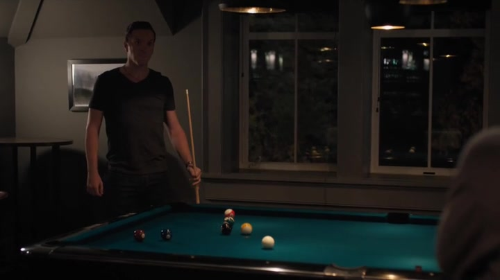

01
街道 / Axelrod 家 / 音乐厅
钱曾让他被欢迎，现在挡不住敌意

剧情事实阿克斯发现汽车被涂写辱骂，先让孩子避开，再与劳拉讨论是否暂时离开。次日公司被抗议者包围，音乐厅代表要求撤下他的名字；他要求退还捐款，否则坚持保留冠名，劳拉仍感到不安。[1][2]
这一场为什么重要 · 个人解读
最初的威胁不是逮捕，而是生活空间突然变得不安全。劳拉读到的是人们的仇恨，阿克斯回应的仍是财产和契约。他能用捐款合同抵挡一次改名，却无法因此恢复他人对这笔钱的尊重。台球桌上的连续命中，也不能替家庭消除现实中的失控。
因此 → 旧日的声誉资产开始逐项变成负担。